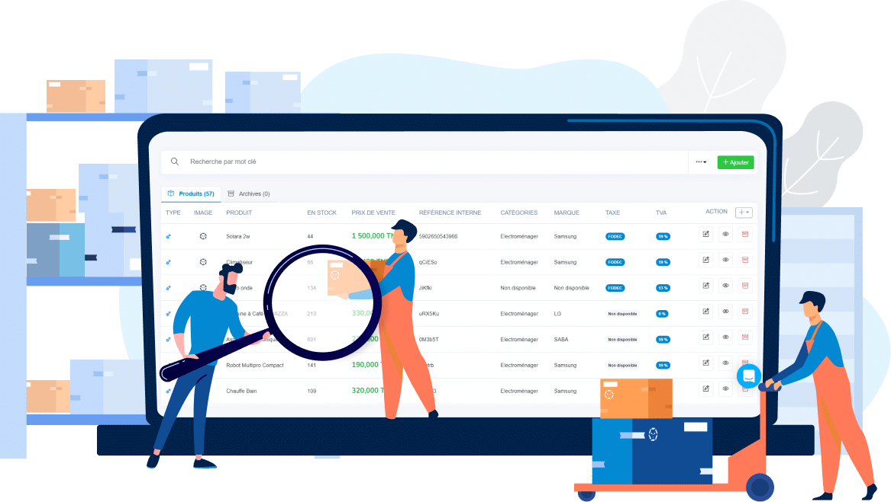

Mes projets réalisés
Mischili
Application de bureau développée pour Mattel, permettant de gérer les transactions de solde (crédit, internet, SMS), les transferts via banques (Bankily, Masrivi) et les comptes revendeurs. Réalisée en Java avec MySQL.

Agence Immobilière
Site web développé avec Laravel pour une agence immobilière. Il permet la publication, la recherche et la gestion de biens (locations et ventes), avec un système d’authentification, de messagerie et de tableau de bord.
Chatbot Médical
Assistant médical intelligent capable de prédire certaines maladies à partir des symptômes saisis. Développé avec Python (Flask, Tkinter) et Swift pour l'intégration mobile. Utilisation de modèles d'intelligence artificielle.

Gestion de Magasin
Création d'un systeme en Laravel et MySQL conçue pour la gestion des ventes, des stocks etc... Elle intègre des fonctionnalités comme le suivi des produits, des clients et des opérations quotidiennes.

École El Vaida
Application desktop en Java et MySQL pour la gestion d'une école privée : inscriptions, gestion des notes, emploi du temps, enseignants et paiement des frais de scolarité.
Gestion des Ressources Humaines
Solution RH développée en Java avec MySQL pour la gestion des employés, contrats, présences, congés et bulletins de paie. Interface utilisateur intuitive pour les administrateurs RH.